1-DOF insight
The single-spring test gives natural frequency and damping, but the FFT and peak-count methods reveal different views of the same physical response.
ME 522 Mechanical Vibrations | System Analysis
The useful result is not just a set of frequencies. An ideal vibration model predicts the structure of the response, while real hardware shifts the measured frequencies through damping, distributed spring mass, sensor mass, and coupled motion.
The single-spring test gives natural frequency and damping, but the FFT and peak-count methods reveal different views of the same physical response.
The two-spring test requires an eigenvalue model because the motion separates into multiple modal frequencies and mode shapes.
The accelerometer data validates the theory and also exposes where the printed spring assembly is not a perfect lumped-parameter system.
Analysis Roadmap
The analysis connects hardware setup, theoretical frequency calculations, time-domain response, FFT spectra, damping estimates, and theory-versus-experiment interpretation.
Hardware and Data Acquisition
The data path is simple: accelerometers measure motion, the Arduino reads the sensors over I2C, and the recorded acceleration signal is processed into time and frequency results.
Reads accelerometer data over I2C and streams the time response.
Six-axis sensor board aligned with the spring-motion axis.
I2C wiring: VCC to 5V, GND, SCL to A5, SDA to A4.
AD0 shifts the second GY-521 from 0x68 to 0x69.
One modular spring uses \(k=106.6\ \mathrm{N/m}\).
Post-processing uses peak count, log decrement, and FFT.
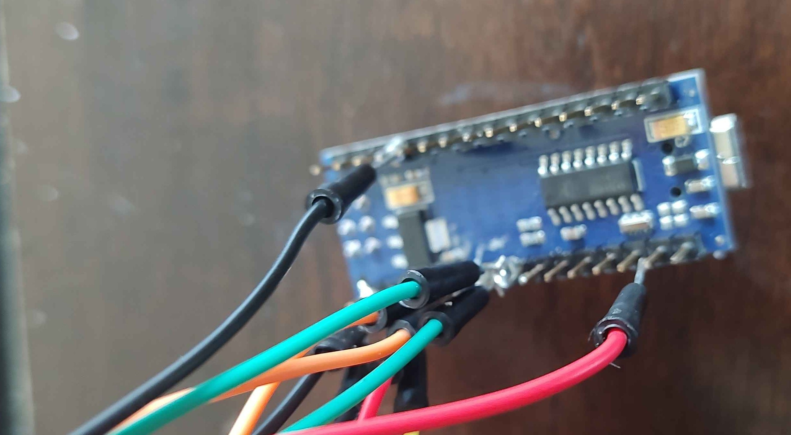
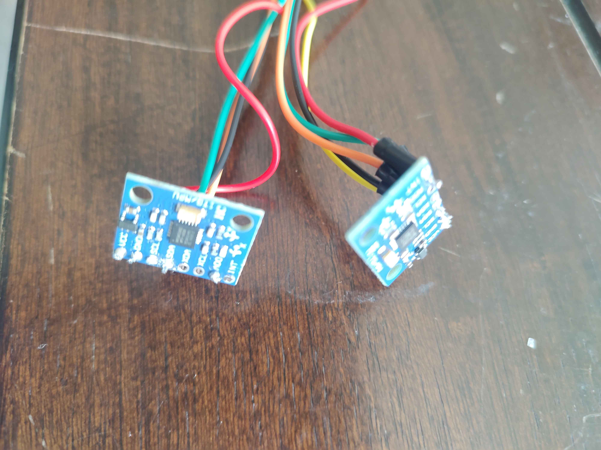
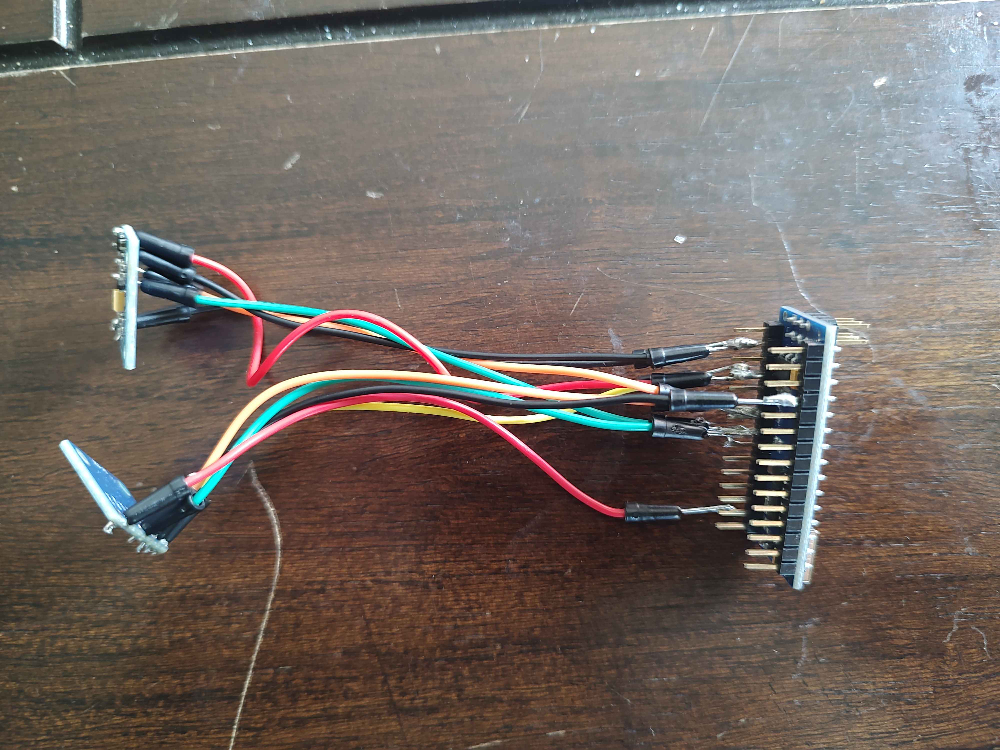
System Setup
The physical setups separate the single-coordinate oscillator from the coupled two-coordinate system.
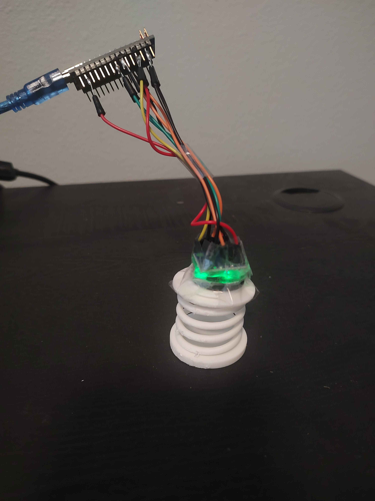
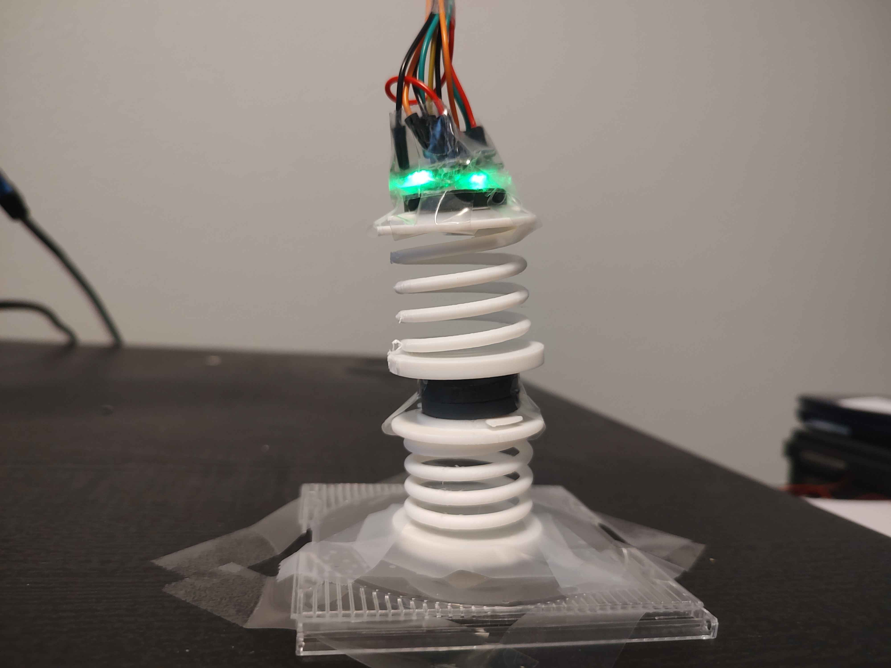
Measured Test Values
The measured test statistics are used consistently in the 1-DOF and 2-DOF calculations.
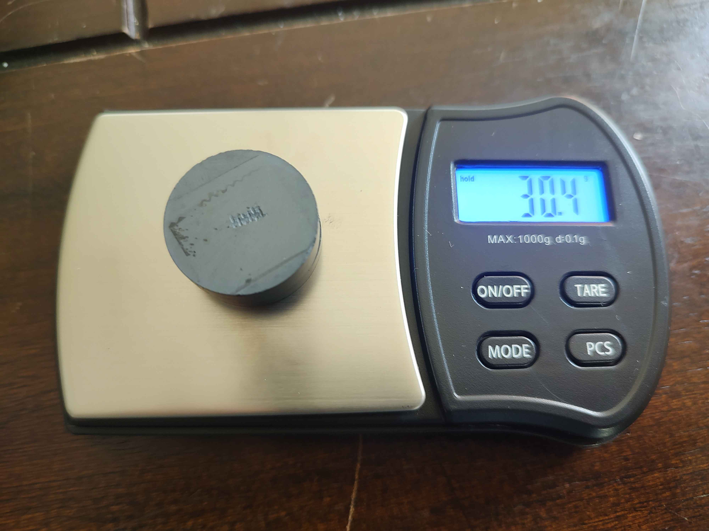
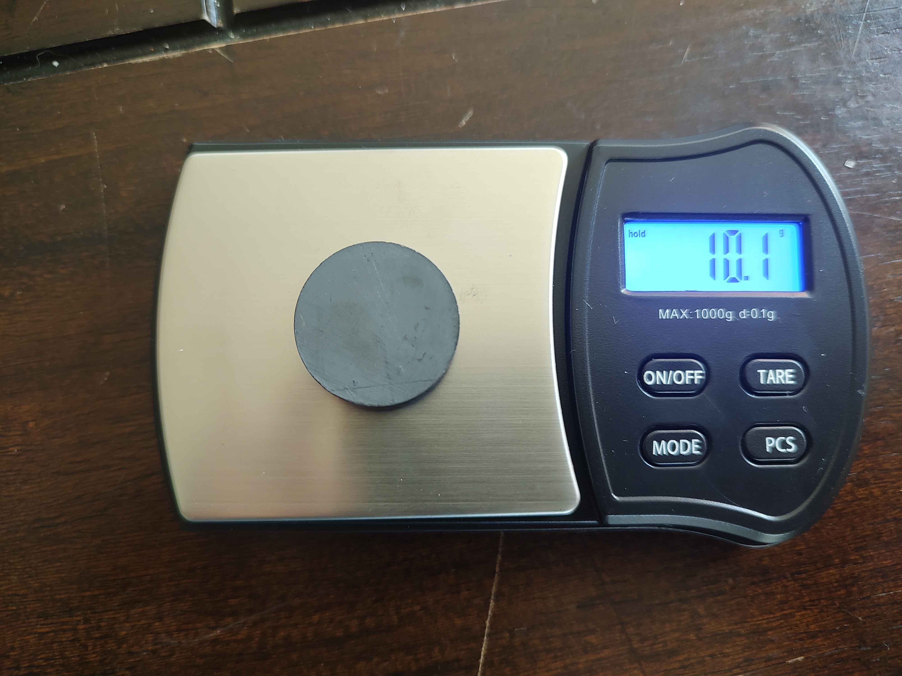
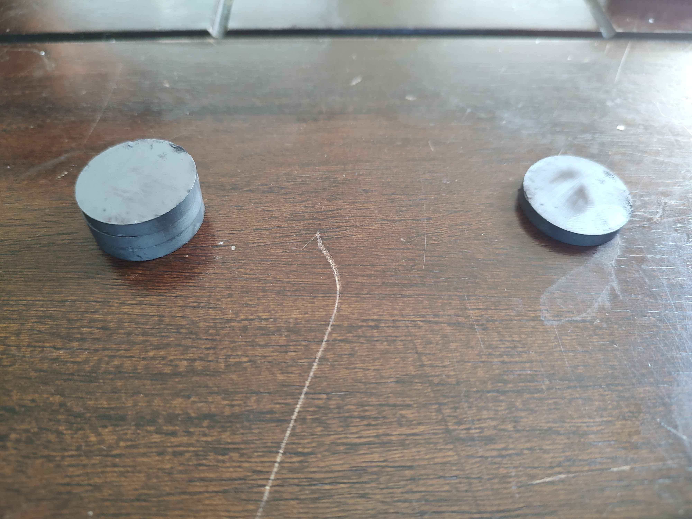
1-DOF Theory
The damping correction is included, but it is small because the measured damping ratio is much less than one.
1-DOF Results
The time-domain method approximates the response as one clean oscillator; the FFT shows the dominant frequency content of the real assembly.
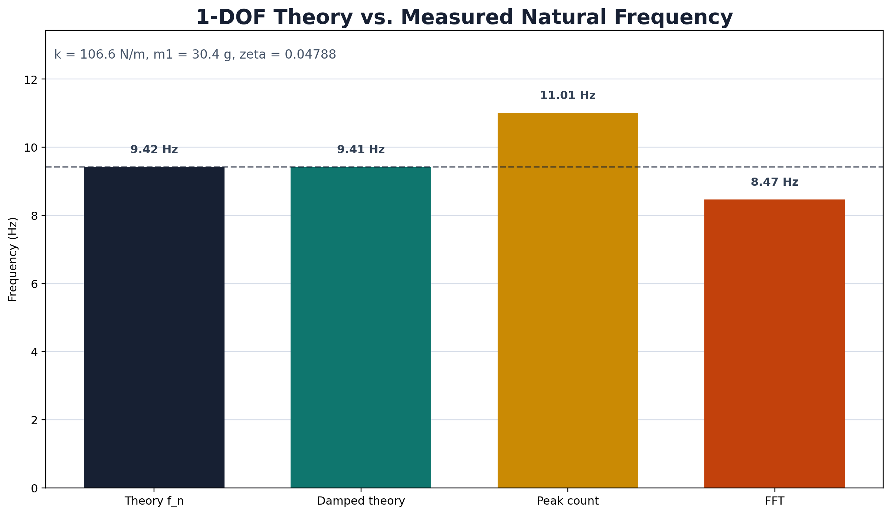
1-DOF Signal Evidence
The time-domain response and FFT spectrum answer different questions about the same free-vibration test.
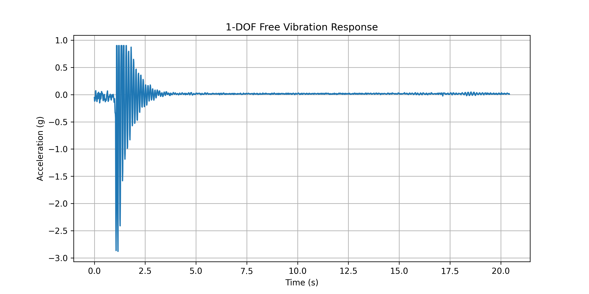
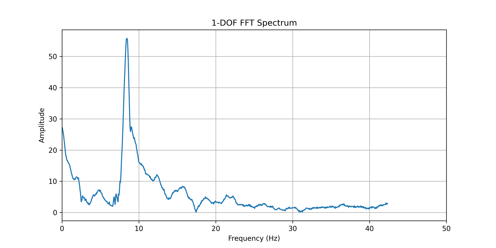
2-DOF Theory
Two masses and two springs produce two theoretical natural frequencies and two mode shapes.
2-DOF Results
The analytical model predicts both a lower in-phase mode and a higher out-of-phase mode.
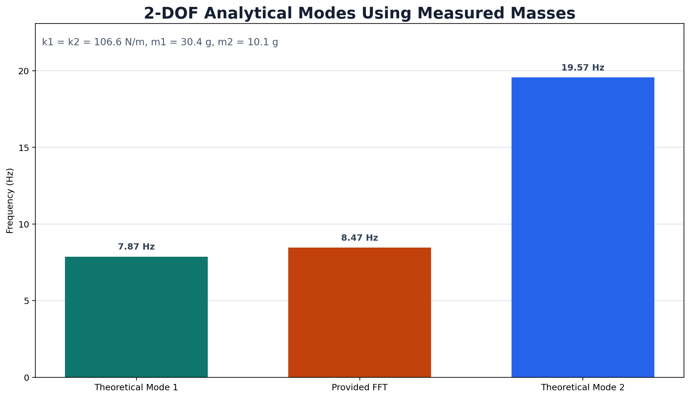
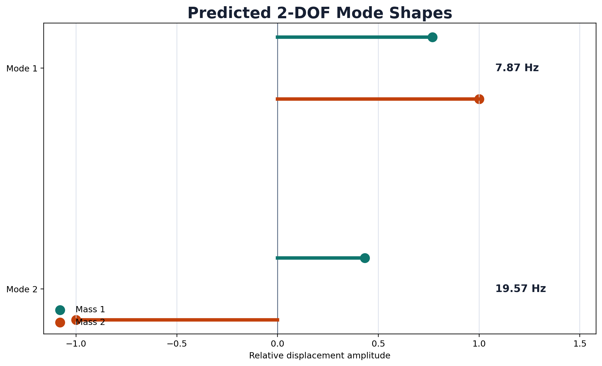
2-DOF Signal Evidence
The time response shows both accelerometer channels, while the FFT spectrum separates the coupled signal into frequency content.
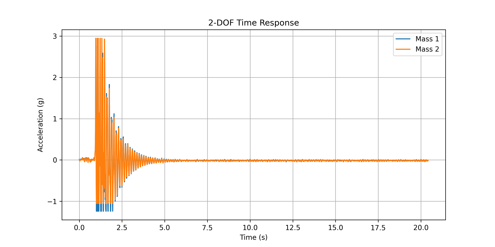
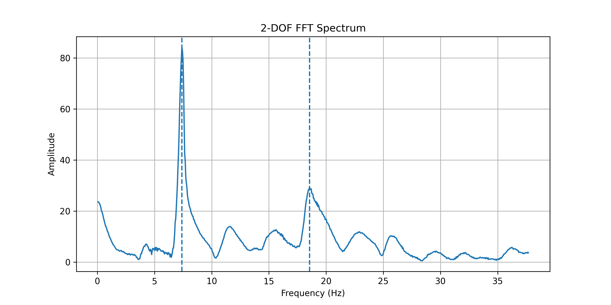
Discussion and Conclusion
The measured differences are physically meaningful rather than just error. They point to damping, distributed mass, sensor mass, assembly compliance, and measurement-method sensitivity.
The theoretical frequency is 9.425 Hz, but peak counting and FFT give different measured values. That means the real oscillator is not perfectly ideal.
The mass and stiffness matrices predict two modes. The measured FFT value aligns most closely with the lower theoretical mode.
Arduino accelerometer data makes the theory testable, while the physical printed spring and mounted electronics explain the deviations.